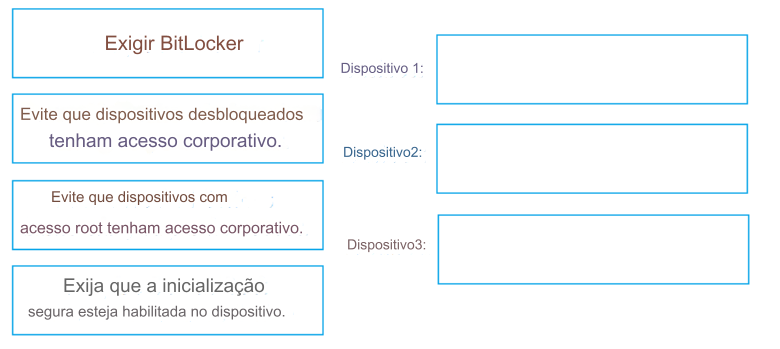

38- ARRASTE E SOLTE -
Você tem uma assinatura do Microsoft 365 que contém os dispositivos mostrados na tabela a seguir.
Você precisa garantir que apenas dispositivos que executam firmware confiável ou versões de sistema operacional possam
acessar os recursos da rede.
Qual configuração de política de conformidade você deve definir para cada dispositivo?
Para responder, arraste as configurações apropriadas
para os dispositivos corretos.
Cada configuração pode ser usada uma vez, mais de uma vez ou nunca ser usada.
Talvez seja
necessário arrastar a barra de divisão entre os painéis ou rolar para visualizar o conteúdo.
NOTA: Cada seleção correta vale um ponto.
